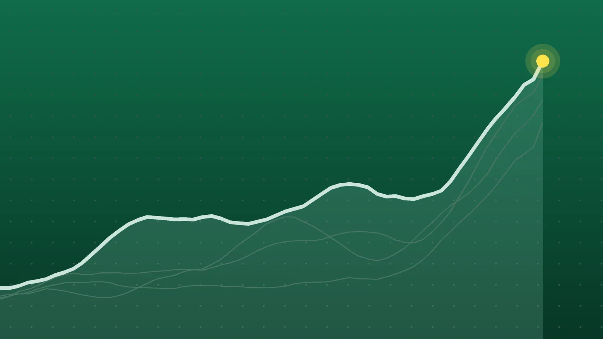

SportsExplainer
Sports Scores, Oct. 25: Antonelli Wins U.S. GP, Inter Go Top
Kimi Antonelli stretched his F1 lead to 123 points, Inter scored twice in stoppage time to join Lazio on top of Serie A, and Bayern and Rennes moved into first place.

Quick take
- Kimi Antonelli won the U.S. Grand Prix from pole for Mercedes and leads the drivers’ championship by 123 points with five rounds left.
- Shadab Khan made 113 not out and shared an unbeaten 89-run last-wicket stand as Pakistan beat England by one wicket in Lahore.
- Inter beat Fiorentina 2-1 with two stoppage-time goals to join Lazio on 22 points; Bayern won 3-1 at Freiburg to go top of the Bundesliga on goal difference.
- Elena Rybakina, Daniil Medvedev, Lorenzo Musetti, Tallon Griekspoor and Katerina Siniakova won tour titles.
Why it's trending Sunday, Oct. 25, brought the U.S. Grand Prix, a one-wicket ODI finish in Lahore, 13 matches across Serie A, the Bundesliga and Ligue 1, and five tennis finals.
Sports scores for Oct. 25
Kimi Antonelli made the U.S. Grand Prix look easy. The Mercedes driver led from pole at the Circuit of the Americas and won by just over 13 seconds from Ferrari’s Charles Leclerc, according to Motorsport Week’s results. It was his ninth win of the season, the AP reported, but the title has to wait at least one more race.
In Lahore, Shadab Khan rescued Pakistan from 154-9 with an unbeaten 113 to beat England by one wicket. In Europe, Inter, Bayern Munich and Rennes all finished the day in first place. This post collects those results and five tennis finals. The day’s Premier League and La Liga games have their own roundups: Premier League scores for Oct. 25 and La Liga scores for Oct. 25.
All final scores
Formula 1, U.S. Grand Prix (Austin): order per RaceFans, gaps per Motorsport Week
| Place | Driver | Team | Gap to winner |
|---|---|---|---|
| 1 | Kimi Antonelli | Mercedes | Winner |
| 2 | Charles Leclerc | Ferrari | 13.1 sec. |
| 3 | Max Verstappen | Red Bull | 17.5 sec. |
| 4 | Lewis Hamilton | Ferrari | 18.5 sec. |
| 5 | Lando Norris | McLaren | 30.5 sec. |
| 6 | Isack Hadjar | Red Bull | 34.4 sec. |
| 7 | Oscar Piastri | McLaren | 52.7 sec. |
| 8 | George Russell | Mercedes | 54.3 sec. |
| 9 | Liam Lawson | Racing Bulls | 1:19.2 |
| 10 | Pierre Gasly | Alpine | 1:27.5 |
Cricket, men’s ODI tri-series (Lahore):
| Winner | Result | Loser | Note |
|---|---|---|---|
| Pakistan | won by 1 wicket | England (241 all out) | Shadab Khan 113 not out; Ben Duckett 105; Shaheen Afridi 4-46 |
Serie A:
| Winner | Score | Loser | Note |
|---|---|---|---|
| Inter | 2-1 | Fiorentina | Home win; Thuram and Zielinski (penalty) in stoppage time |
| Atalanta | 4-4 | Frosinone | Draw; Krstovic and Schmid scored twice each |
| Genoa | 1-0 | Venezia | Home win; Mikael Ellertsson in the first half |
| Juventus | 2-0 | at Lecce | McKennie, Douglas Luiz; Lecce’s Gaspar sent off late |
| AC Milan | 2-0 | at Udinese | Pulisic 6’, Omari Hutchinson 65’ |
Bundesliga:
| Winner | Score | Loser | Note |
|---|---|---|---|
| Bayern Munich | 3-1 | at SC Freiburg | Upamecano, Gnabry (his 100th Bundesliga goal), Olise |
| Hoffenheim | 3-0 | Bayer Leverkusen | Home win; all three goals after the 78th minute |
Ligue 1:
| Winner | Score | Loser | Note |
|---|---|---|---|
| Rennes | 3-0 | Strasbourg | Home win; Sebastian Szymanski scored twice |
| Marseille | 4-3 | Le Havre | Home win; Marseille led 4-0 |
| Monaco | 1-1 | Lille | Draw; Ethan Mbappé scored for 10-man Lille |
| Auxerre | 1-1 | Le Mans | Draw; Cameron Archer equalized |
| Angers | 0-0 | Lorient | Draw |
| Toulouse | 0-0 | Troyes | Draw |
MLS:
| Home | Score | Away | Note |
|---|---|---|---|
| LAFC | 2-2 | LA Galaxy | Draw; Joseph Paintsil scored twice, LAFC clinched a playoff spot |
Tennis finals:
| Event | Champion | Score | Runner-up |
|---|---|---|---|
| WTA Ningbo | Elena Rybakina | 6-2, 6-2 | Leylah Fernandez |
| WTA Osaka | Katerina Siniakova | 6-1, 6-0 | Ashlyn Krueger |
| ATP Almaty | Daniil Medvedev | 6-7 (6), 6-1, 6-3 | Nikoloz Basilashvili |
| ATP Lyon | Lorenzo Musetti | 6-3, 6-4 | Taylor Fritz |
| ATP Brussels | Tallon Griekspoor | 4-6, 6-3, 6-4 | Jan-Lennard Struff |
El Tráfico ends level
The only MLS game of the day, played Sunday night at BMO Stadium in Los Angeles, swung twice in about half an hour. Paintsil put the Galaxy ahead in the 34th minute and doubled the lead early in the second half by following up a save from Hugo Lloris, according to the Galaxy’s match report. Two minutes later Denis Bouanga pounced on a spilled long-range shot, and Leo Walta tied it in the 63rd minute with a cross that took a deflection. Bouanga thought he had won it deep in stoppage time, but the goal was ruled out for offside after a video review, VAVEL and The Sporting Tribune reported.
Antonelli’s title has to wait
Antonelli got away cleanly from pole and was never threatened. Russell, his teammate and nearest rival in the standings, finished only eighth, the AP said. Before the race, Yahoo Sports laid out that a win would clinch the title only if Russell finished ninth or worse and Hamilton fifth or worse. Hamilton’s fourth place kept the race alive.
The AP noted that the 20-year-old would be the youngest champion the sport has had, and Italy’s first title winner since Alberto Ascari won in 1953.
Shadab’s last-wicket rescue
England were bowled out for 241, with Duckett making his fifth ODI century, The Guardian reported. Pakistan then slipped to 154-9, still 88 short. Shadab, batting with No. 11 Haris Rauf, added 89 unbeaten runs for the last wicket, Rauf contributing 7 of them. The National said no last-wicket pair had ever put on more to win an ODI chase. It was also Shadab’s first international hundred.
Late goals reshape the European tables
Inter trailed Fiorentina 1-0 until stoppage time. Marcus Thuram equalized in the first added minute, and Piotr Zielinski converted a penalty after Thuram was fouled, AFP reported. Milan bounced back from a midweek loss with a 2-0 win at Udinese, SempreMilan said.
In Germany, assistant Aaron Danks ran Bayern’s bench because head coach Vincent Kompany had collapsed during Friday’s training session; beIN Sports said Kompany was in stable condition. Hoffenheim ended Leverkusen’s six-game league winning streak with three goals in the final 11 minutes, AFP via theScore reported, though Alexander Prass was sent off for removing his shirt while celebrating his goal.
In France, Marseille nearly threw away a four-goal lead, conceding three times from the 77th minute on, per Sofascore.
What it means
- MLS: The point was enough for LAFC to clinch a playoff berth, its fifth straight, MLSsoccer.com reported. LAFC sit sixth in the West with 47 points and two games left. The Galaxy, on 41, hold ninth, the last playoff place, two points ahead of Real Salt Lake, which has a game in hand.
- F1: Antonelli has 365 points to Russell’s 242 after 18 of 23 rounds, RaceFans reported. His lead grew from 102 to 123 points in one afternoon, with five rounds left.
- Serie A: Inter and Lazio share first on 22 points. Roma and Milan have 18, one ahead of Como.
- Bundesliga: Bayern and Borussia Dortmund both have 17 points after seven games; Bayern lead on goal difference.
- Ligue 1: Rennes lead with 16 points, ahead of Lille and Monaco on 15, per Sports Infos. Lyon and Paris Saint-Germain each have 14 points from seven games and meet on Monday.
- Cricket: Pakistan are into the final. England, 0-3 so far, can still reach the final, but only if Pakistan beat Sri Lanka on Tuesday and England then beat Sri Lanka heavily on Thursday, The Guardian said.
- Tennis: Rybakina’s fourth title of 2026 is the most on the WTA Tour, WTATennis.com noted. Medvedev defended a title for the first time in his career, per Tennis Majors, and Musetti ended a run of seven straight lost finals, ATPTour.com said.
What’s next
- Ligue 1: Paris Saint-Germain host Lyon on Monday, Oct. 26, at 3:30 p.m. ET, per Sky Sports’ fixture list.
- Cricket: New Zealand and India play the third T20I in Wellington on Tuesday, Oct. 27, and South Africa and Australia start their third Test in Cape Town the same day, according to Wikipedia’s 2026-27 calendar.
- Tennis: ATP Vienna and Basel and WTA Tokyo and Guangzhou run Oct. 26 to Nov. 1, Tennis Connected reported. The Paris Masters starts Saturday, Oct. 31, the venue’s site says.
- Bundesliga: Bayern host Dortmund on Saturday, Oct. 31, beIN Sports reported.
- MLS: The Galaxy host Austin FC on Saturday, Oct. 31, at 5 p.m. ET, per the club. LAFC host Minnesota United on Sunday, Nov. 1, at 8:30 p.m. ET, MLSsoccer.com said.
- F1: The next race is the Mexico City Grand Prix, where Antonelli can clinch the title, the AP said.
Sunday’s NFL, NBA and NHL games have their own roundups: NFL scores for Oct. 25, NBA scores for Oct. 25 and NHL scores for Oct. 25.
Sources
- LA Galaxy Match Report: Paintsil Bags a Brace, LA Galaxy Battle LAFC to 2-2 Draw at BMO StadiumOct. 25, 2026
- MLSsoccer.com LAFC's furious El Tráfico comeback sparks playoff hopesOct. 26, 2026
- VAVEL USA LAFC 2-2 LA Galaxy: Bouanga denied dramatic Tráfico winnerOct. 26, 2026
- The Sporting Tribune LAFC battles back from two-goal deficit to clinch playoff berth in El TráficoOct. 25, 2026
- RaceFans 2026 United States Grand Prix race result and championship pointsOct. 25, 2026
- Motorsport Week F1 2026 United States GP – Race ResultsOct. 25, 2026
- Associated Press via ClickOnDetroit Kimi Antonelli wins dominant US Grand Prix and tightens his grip on historic F1 title chaseOct. 25, 2026
- The Guardian via AOL England stunned after Shadab Khan's miraculous century delivers one-wicket win for PakistanOct. 25, 2026
- The National Shadab Khan's world record century secures thrilling tri-series win for PakistanOct. 25, 2026
- NewsBytes ODI Tri-Series: Shadab, Rauf script history as Pakistan beat EnglandOct. 25, 2026
- Wikipedia International cricket in 2026–27Oct. 25, 2026
- Arab News (AFP) Inter rally late to down Fiorentina and regain Serie A leadOct. 25, 2026
- Football Italia via Yahoo Sports Serie A | Inter 2-1 Fiorentina: Thuram and Zielinski complete another comebackOct. 25, 2026
- Football Italia Serie A | Atalanta 4-4 Frosinone: Eight-goal thriller is pure entertainmentOct. 25, 2026
- Goal.com Ellertson is enough for Genoa: 1-0 win over Venezia, who remain bottomOct. 25, 2026
- Goal.com Juventus return to winning ways: 2-0 at Lecce and three points off the Champions League placesOct. 25, 2026
- SempreMilan Udinese 0-2 AC Milan: Pulisic and Hutchinson score to seal bounce-back winOct. 25, 2026
- beIN Sports Freiburg 1-3 Bayern Munich: Upamecano scores stunner as Gnabry brings up Bundesliga centuryOct. 25, 2026
- Bundesliga.com Andrej Kramarić inspires Hoffenheim to stunning victory over Bayer LeverkusenOct. 25, 2026
- theScore (AFP) Hoffenheim score 3 late goals to snap Leverkusen's winning streakOct. 25, 2026
- Sky Sports French Ligue 1 Scores & FixturesOct. 25, 2026
- Sports Infos Ligue 1 2026/2027 - Classement après J8 : Rennes prend la tête, PSG-Lyon pour le sommet de lundiOct. 25, 2026
- Eurosport France Ligue 1 - Monaco et Lille partagent les points et s'installent provisoirement aux deux premières placesOct. 25, 2026
- Sofascore News Marseille 4-3 Le Havre: Ligue 1 classic with a late scareOct. 25, 2026
- InfoRadar Rennes écrase Strasbourg (3-0) et s'installe provisoirement en tête de la Ligue 1Oct. 25, 2026
- WTATennis.com By the Numbers: Rybakina wins Ningbo Open for tour-leading fourth title of seasonOct. 25, 2026
- Al Jazeera (Reuters) Elena Rybakina retains Ningbo title, wins first trophy as world number oneOct. 25, 2026
- Tennis Majors At the fourth attempt, Medvedev defends a title for the first time, coming from a set down to beat Basilashvili in AlmatyOct. 25, 2026
- Field Level Media ATP roundup: Daniil Medvedev bags title No. 25 in AlmatyOct. 25, 2026
- ATPTour.com Musetti triumphs in Lyon, wins first title since 2022Oct. 25, 2026
- ATPTour.com Griekspoor rallies past Struff for Brussels crownOct. 25, 2026
- WTATennis.com Siniakova ends title drought with dominant Japan Open victoryOct. 25, 2026
- Yahoo Sports F1 United States Grand Prix updates: Kimi Antonelli starts first in attempt to become youngest championOct. 25, 2026
- Tennis Connected ATP Vienna, Basel & WTA Tokyo, Guangzhou 2026 Live Streaming: How to Watch Tennis Online and on TVOct. 24, 2026
- Paris La Défense The Rolex Paris Masters is back from October 31 to November 8, 2026.Oct. 25, 2026
Keep reading

Sports Scores, Oct. 24: Brewers Rally for 2-0 World Series Lead
Sports scores for Oct. 24, 2026: Brewers 5, Rays 4 in World Series Game 2, India’s last-over T20I win, Lens over Paris FC and 10 tennis semifinals.

Sports Scores, Oct. 23: Brewers Win World Series Game 1, 3-2
Sports scores for Oct. 23, 2026: Brewers 3, Rays 2 in World Series Game 1, plus two NHL games, five European soccer leagues, cricket and 20 tennis results.

Sports Scores, Oct. 22: Other Results From NBA, NFL and Tennis
Other sports results for Oct. 22, 2026: the NBA’s two games, Bears 30, Patriots 24 on Thursday Night Football, and 20 WTA and ATP singles results.